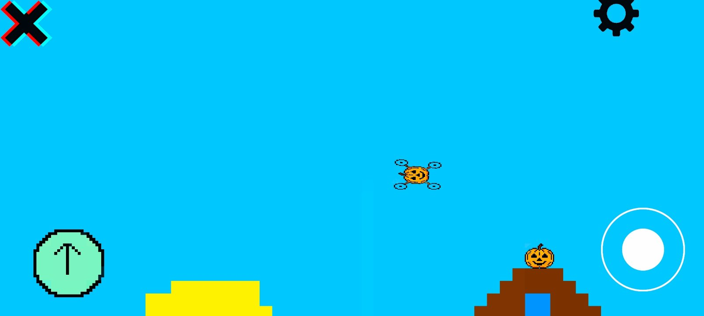
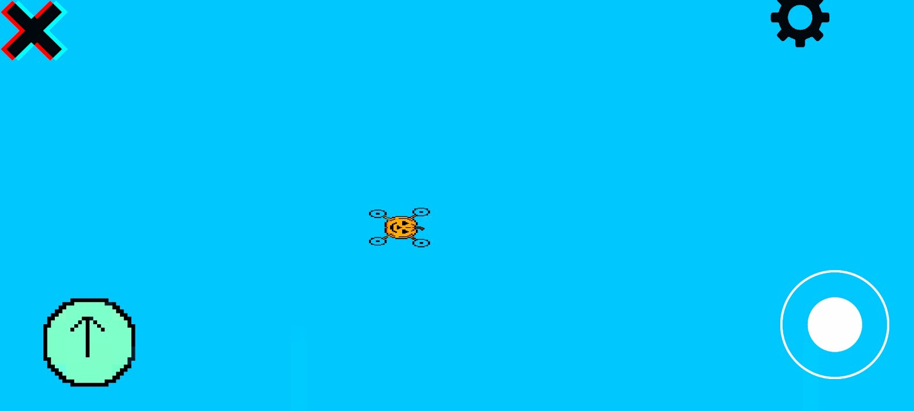
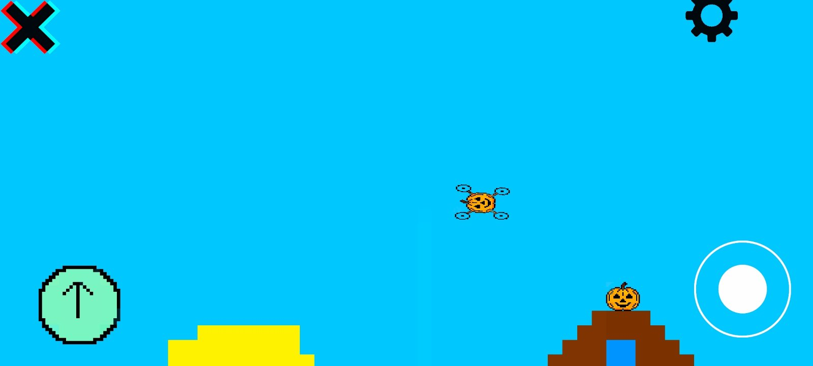
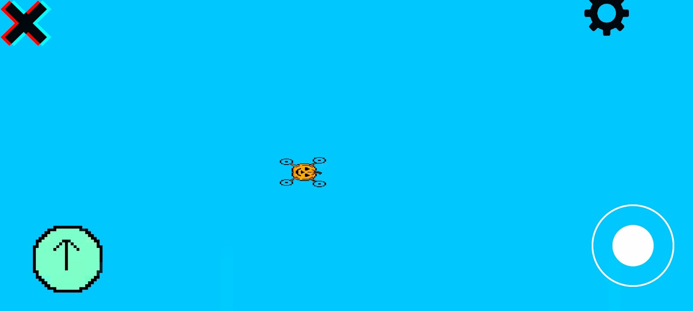

Drone
Привіт я думаю що ти знаєш игру drone і цей сайт о ній
а якшо ні то вось картинки
 

Якшо у вас ще немає игри то кликніть по тексту
Так повернемося до інформації.


Якшо у вас ще немає игри то кликніть по тексту
Так повернемося до інформації.
1. до краю карти в вільній грі летіти десь 54 секунди.
2. спочатку гра малась називатись Drone simulator eternal flight преклад симулятор дрона біскінечний політ.
3. 20 грудні буде велике оновлення.
4. гра з 3 грудня буде оновлюватися кожну неділю
а нацйому інформація закінчується
розробники:
| ім'я |
Хто він |
| Єгор |
Програмист |
| Матвій |
Ігровий дизайнер |
Приєднуйся дро розробки гри